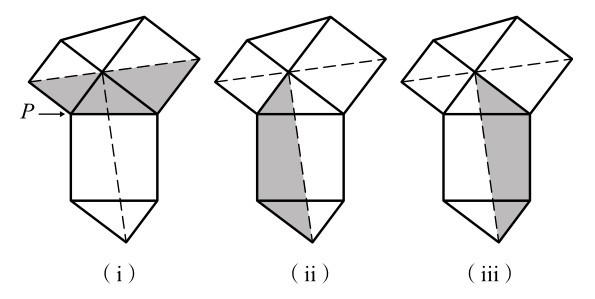

为了了解安纳里齐的平铺正方形是如何证明毕达哥拉斯定理的，请看图2-7上标记的三角形。我们所要做的就是把斜边的正方形重新排列成另外两条边的正方形。斜边的正方形由5个部分组成：3个部分是浅灰色的，两个部分是深灰色的。我们可以通过考虑这种模式是如何重复的，从而使浅灰色的部分正好拼成以三角形一条直角边为边的正方形，而深灰色部分则组成以另一条直角边为边的正方形。
在莱昂纳多的证明中，首先我们需要证明图附-1（i）和（ii）中的阴影部分面积相等。我们通过围绕点P旋转来证明这一点。这两个部分具有相同的边长和内角，因此一定是相同的。然后我们需要证明，这一部分等于（iii）中的阴影部分。这一定成立，因为它们是由相同的部分组成的。
有了这些信息，我们就能完成证明。第一块阴影部分和它沿虚线的镜像由两个相同的直角三角形和两个以较短边为边的正方形组成。这一块面积一定等于（ii）和（iii）中阴影部分的面积，它由两个相同的直角三角形和以斜边为边的正方形组成。如果我们从这两个例子中都减去两个三角形的面积，斜边的平方一定等于另两条边的平方。

图附-1 莱昂纳多的证明